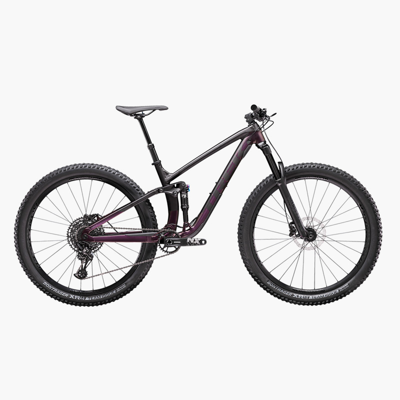

textsms
|
DOMANE AL 2 - 2020more_vert
DOMANE AL 2 - 2020close
La Domane AL 2 es la pueta perfecta hacia el ciclismo de ruta cómodo. Es estable, legera, se puede instalar accesorios con facilidad y además es divertida, todo lo cual se hace la opción ideal para cualquiera que busque una gran primera experiencia con una bici de carrera real. |

DOMANE AL 2 - 2020more_vert
DOMANE AL 2 WSD - 2020close
La Domane AL 2 para damas es la pueta perfecta hacia el ciclismo de ruta cómodo. El cuadro ligero, la geometría de resistencia estable y los puntos de contacto diseñados especificamente para la mujer prporcionan un gran ajuste y sensación desde tu primer paseo en tu bici de carrera. |
DOMANE AL 3 - 2020more_vert
DOMANE AL 3 - 2020close
La Domane AL 3 es suave, estable y confiable. Es perfecta para ciclistas nuevos y para cualquiera que busque mejorar a una bici de carrera de aluminio versátil diseñada para ofrecer una experiencia de manejo cómoda. Sus piezas de calidad están listas para enfrentarse a paseos es grupo y aventuras hacia distancias más largas. |
DOMANE AL 3 - 2020more_vert
DOMANE AL 3 WSD - 2020close
La Domane AL 3 para damas es suave, estable y confiable. Es perfecta para ciclistas nuevos y para mujeres que busque mejorar a una bici de carrera de aluminio versátil, con puntos de contacto de diseño específico para damas y una mejor experiencia de manejo general. Sus piezas de calidad están listas para enfrentarse a paseos es grupo y aventuras hacia distancias más largas. |
|
TOP FUEL 8 - 2020more_vert
TOP FUEL 8 - 2020close
La Top Fuel 8 combina la eficacia y ligereza de una bicicleta de cross country y la capacidad de una bicicleta de trail. Es rápida, ágil e ideal para divertirte a lo grande tanto en los senderos más sinuosos como en los descensos más técnicos gracias a una horquilla RockShox de 120 mm, al recorrido trasero de 115 mm y a una tija telescópica que podrás bajar en los terrenos más abruptos. Esta bicicleta es capaz de arrasar en los singletrack, competir en las carreras de resistencia más exigentes e incluso dar la cara en los circuitos de cross country. |

FUEL EX 5 - 2020more_vert
FUEL EX 5 - 2020close
La Fuel EX 5 es el punto de partida para aquellos ciclistas que buscan su primera bicicleta de trail de doble suspensión. Una horquilla de 140 mm y un amortiguador trasero de 130 mm, una transmisión Shimano de 1x10, una tija telescópica para bajar el sillín en los descensos y los frenos de disco hidráulico Shimano hacen que la Fuel EX 5 sea una bicicleta de montaña de alto rendimiento excepcionalmente versátil y con una increíble relación calidad precio. |
FUEL EX 7 - 2020more_vert
FUEL EX 7 - 2020close
La Fuel EX 7 destaca en los descensos más complicados, allí donde la tija telescópica, la nueva horquilla RockShox 35 Gold de 140 mm y el amortiguador trasero de 130 mm resultan muy prácticos. Un cuadro ligero de aluminio, ruedas Tubeless Ready y una transmisión SRAM NX Eagle de 1x12 de confianza la convierten en una bicicleta de montaña con doble suspensión increíble para todo. |
FUEL EX 8 -
2020more_vert
FUEL EX 8 - 2020close
La Fuel EX 8 es un bicicleta de trail ideal para los ciclistas de montaña que buscan una bicicleta versátil con doble suspensión que sea capaz de arrasar en las competiciones de maratón y de varias etapas, además de en los circuitos de enduro. Esta bicicleta de montaña ofrece una gran relación calidad precio gracias a un cuadro de aluminio Alpha, una suspensión delantera de 140 mm y trasera de 130 mm, y una transmisión SRAM GX Eagle de 12 velocidades. |
|
PRECALIBER 12 NIÑOS - 2020more_vert
PRECALIBER 12 NIÑOS - 2020close
Es la primera bicicleta perfecta para pequeños ciclistas que están por delante de la curva y listos para dos ruedas a una edad más joven que la mayoría. Tiene una manija incorporada en el sillín para que pueda guiarlos mientras viajan, y ruedas de entrenamiento sin herramientas que son súper fáciles de instalar y quitar. Es ideal para niños de 3 a 4 años, de entre 36 y 40˝ de altura. |
PRECALIBER 12 NIÑOS - 2019more_vert
PRECALIBER 12 NIÑOS - 2019close
La Precaliber 12 para niño es la perfecta primera bici para pequeños ciclistas que ya se han adelantado y están listos para andar sobre dos ruedas con una edad menor que la mayoría. Tiene una manija incorporada en asiento para que puedas guiarle mientras pasea, y ruedas de entrenamiento que no requieren herramientas que son superfáciles de instalar y desmontar. Es excelente para niños de 3 a 4 años de 36 a 40" de altura. |
PRECALIBER 12 NIÑAS - 2019more_vert
PRECALIBER 12 NIÑAS - 2019close
La Precaliber 12 para niña es la perfecta primera bici para pequeñas ciclistas que ya se han adelantado y están listas para andar sobre dos ruedas con una edad menor que la mayoría. Tiene una manija incorporada en asiento para que puedas guiarle mientras pasea, y ruedas de entrenamiento que no requieren herramientas que son superfáciles de instalar y desmontar. Es excelente para niñas de 3 a 4 años de 36 a 40" de altura. |
PRECALIBER 12 NIÑAS - 2020more_vert
PRECALIBER 12 NIÑAS - 2020close
Es la primera bicicleta perfecta para pequeñas ciclistas que están por delante de la curva y listas para dos ruedas a una edad más joven que la mayoría. Tiene una manija incorporada en el sillín para que pueda guiarlos mientras viajan, y ruedas de entrenamiento sin herramientas que son súper fáciles de instalar y quitar. Es ideal para niños de 3 a 4 años, de entre 36 y 40˝ de altura. |
|
POWERFLY FS 5more_vert
POWERFLY FS 5close
La bicicleta Powerfly LT 7 EU MY19 es una bicicleta eléctrica que proporciona asistencia en el pedaleo al usuario final cuando se aplica Potencia: muscular a los pedales. Su diseño y funcionamiento comprobado están pensados para el uso todoterreno en pistas designadas. |
POWERFLY 5more_vert
POWERFLY 5close
La bicicleta Powerfly 5 MY19 es una bicicleta eléctrica que proporciona asistencia en el pedaleo al usuario final cuando se aplica Potencia: muscular a los pedales. Su diseño y funcionamiento comprobado están pensados para el uso todoterreno en pistas designadas. |
POWERFLY 4more_vert
POWERFLY 4close
La bicicleta Powerfly 4 EU MY19 es una bicicleta eléctrica que proporciona asistencia en el pedaleo al usuario final cuando se aplica potencia muscular a los pedales. Su diseño y funcionamiento comprobado están pensados para el uso todoterreno en pistas designadas. |
POWERFLY FS 7more_vert
POWERFLY FS 7close
La bicicleta Powerfly LT 7 EU MY19 es una bicicleta eléctrica que proporciona asistencia en el pedaleo al usuario final cuando se aplica Potencia: muscular a los pedales. Su diseño y funcionamiento comprobado están pensados para el uso todoterreno en pistas designadas. |